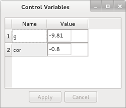

Kontrol Parametre Penceresi
Kontrol parametre penceresi kontrol değişkenlerinin listesini gösterir ve kontrol değişkenlerinin değerlerini değiştirme imkanı sunar.

Kontrol parametre penceresinde her kontrol değişkeni için Name ve Value alanı vardır. Name alanı kontrol değişkeni ismini, Value alanı kontrol değişkeni değerini gösterir. Value alanına çift tıklanarak kontrol değişkeni değeri değiştirilebilir. Değişikliklerin kontrol programa yansıtılması için Apply düğmesine basılmalıdır. Aksi takdirde değişiklikler uygulanmaz. Değişiklikleri iptal etmek için Cancel düğmesine basılır.
Kayıt